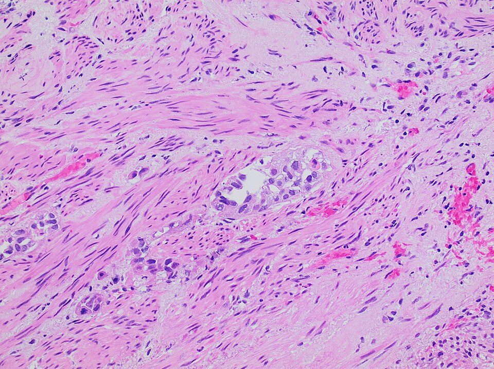

General information only. It does not replace advice from your care team and should not be used to choose a treatment.


At a glance
| How common | Bladder: 610,000 cases a year worldwide; kidney: 435,000 |
| Causes | Tobacco (both), obesity and high blood pressure (kidney), workplace aromatic amines (bladder) |
| Shared sign | Blood in the urine (haematuria), even once and painless |
| Bladder treatment | Endoscopic resection and BCG; cystectomy or bladder preservation with chemoradiotherapy; enfortumab vedotin with pembrolizumab |
| Kidney treatment | Surgery (often partial); surveillance of small masses; immunotherapy with anti-angiogenics |
Bladder cancer
What it is
The bladder is lined by the urothelium, the same tissue lining the ureters and renal pelvis. 90% are urothelial carcinomas. They are divided into:
- Non-muscle-invasive (75%): confined to the lining (Ta, T1, carcinoma in situ). They often recur but are rarely fatal.
- Muscle-invasive (25%): through the muscle layer; can spread.
Risk factors
- Tobacco: causes half of cases; triples or quadruples risk.
- Workplace exposure to aromatic amines (dyes, rubber, leather, paints, aluminium).
- Cyclophosphamide, pelvic radiotherapy, arsenic in water, and schistosomiasis in Africa and the Middle East (squamous cell carcinoma).
- More common in men (3-4 to 1).
Symptoms and diagnosis
Painless haematuria (red or cola-coloured urine); less often burning, urgency or frequency. Diagnosis: urine tests and cytology, ultrasound, cystoscopy and transurethral resection (TURBT), which diagnoses and treats at once. CT urography to rule out upper tract tumours.
Treatment
Non-muscle-invasive: - Complete TURBT plus a single post-operative chemotherapy instillation (mitomycin). - BCG instillations (the tuberculosis vaccine) into the bladder for 1-3 years for intermediate-high risk: reduce recurrence and progression. - Lifelong regular cystoscopies. - If BCG fails: cystectomy, pembrolizumab, or new intravesical therapies (nadofaragene firadenovec, TAR-200, cretostimogene).
Muscle-invasive: - Neoadjuvant cisplatin chemotherapy (now with perioperative durvalumab, NIAGARA trial) followed by radical cystectomy with urinary reconstruction: urostomy (bag) or a neobladder made from bowel. - Bladder preservation: maximal TURBT followed by chemoradiotherapy (trimodality) in selected patients, with comparable results. - Adjuvant nivolumab if tumour remains after surgery (CheckMate 274).
Metastatic: - Enfortumab vedotin with pembrolizumab first line (EV-302 trial), which almost doubled survival compared with classic chemotherapy, the biggest advance in decades. - Cisplatin chemotherapy with nivolumab; avelumab maintenance. - Erdafitinib for FGFR3 alterations; trastuzumab deruxtecan for HER2.
Kidney cancer
What it is
Renal cell carcinoma arises in the kidney tubules. Types: clear cell (75%, with its own sheet), papillary (15%), chromophobe (5%) and rare others (collecting duct, medullary, translocation-associated or fumarate hydratase-deficient). Renal pelvis tumours are urothelial: see upper tract.
Risk factors
Tobacco, obesity, high blood pressure, chronic kidney failure on dialysis, and inherited syndromes: von Hippel-Lindau, Birt-Hogg-Dubé, hereditary leiomyomatosis (FH), tuberous sclerosis, BAP1.
Symptoms and diagnosis
Today more than half are found by chance on an ultrasound or CT done for another reason. The classic triad (blood in urine, flank pain and a mass) is rare and late. Others: fever, anaemia or excess red cells, high calcium, varicocele. Diagnosis by contrast CT; biopsy of small masses if it will change the decision.
Treatment
- Small masses (< 4 cm): partial nephrectomy, preserving kidney function; active surveillance in older people or with other illnesses; ablation (cryotherapy, radiofrequency).
- Larger tumours: radical nephrectomy, often keyhole or robotic.
- Adjuvant pembrolizumab for a year in high risk (KEYNOTE-564, with improved overall survival).
- Advanced disease: immunotherapy combinations (nivolumab with ipilimumab) or immunotherapy with anti-angiogenics (pembrolizumab with axitinib or lenvatinib, nivolumab with cabozantinib). Later: cabozantinib, belzutifan (HIF-2α inhibitor), tivozanib.
- Chemotherapy and conventional radiotherapy are of little use; stereotactic radiotherapy does control metastases.
Outlook
Bladder: over 90% at five years for non-muscle-invasive, 50-60% for treated invasive disease. Kidney: over 90% for small tumours, about 75-80% overall; survival in metastatic disease has multiplied with immunotherapy.
Questions for your team
- Has my tumour invaded the bladder muscle?
- Can I keep my bladder or part of my kidney?
- What type of urinary diversion suits me?
- Should I be tested for an inherited syndrome?
See also: Clear cell kidney cancer, Upper tract urothelial cancer, Prostate cancer, Immunotherapy.
History · Medicapedia
Bladder and kidney cancer in the history of medicine
How it was discovered, who studied it and how its treatment changed over the centuries, told on Medicapedia, our sister site on the history of medicine.
Read the history on Medicapedia ↗Sources
- Powles T, et al. Bladder cancer: ESMO Clinical Practice Guideline. Ann Oncol. 2022;33:244-258. doi:10.1016/j.annonc.2021.11.012
- Powles T, et al. Enfortumab vedotin and pembrolizumab in untreated advanced urothelial cancer (EV-302). N Engl J Med. 2024;390:875-888. doi:10.1056/NEJMoa2312117
- Powles T, et al. Renal cell carcinoma: ESMO Clinical Practice Guideline. Ann Oncol. 2024;35:692-706.
- Choueiri TK, et al. Overall survival with adjuvant pembrolizumab in renal-cell carcinoma (KEYNOTE-564). N Engl J Med. 2024;390:1359-1371.
- Powles T, et al. Perioperative durvalumab with neoadjuvant chemotherapy in operable bladder cancer (NIAGARA). N Engl J Med. 2024;391:1773-1786.
- European Association of Urology. EAU Guidelines. uroweb.org
Recent guidelines and documents (2024-2026)
- SEOM and REDECAN. Las cifras del cáncer en España 2026 (Cancer figures in Spain 2026). Madrid: SEOM; 2026. seom.org
- Powles T, et al. Renal cell carcinoma: ESMO Clinical Practice Guideline for diagnosis, treatment and follow-up. Ann Oncol. 2024;35:692-706. doi:10.1016/j.annonc.2024.05.537
- ESMO Guidelines Committee. ESMO Clinical Practice Guideline interim update on first-line therapy in advanced urothelial carcinoma. Ann Oncol. 2024;35:485-490. doi:10.1016/j.annonc.2024.03.001
Sources reviewed and updated in November 2026.